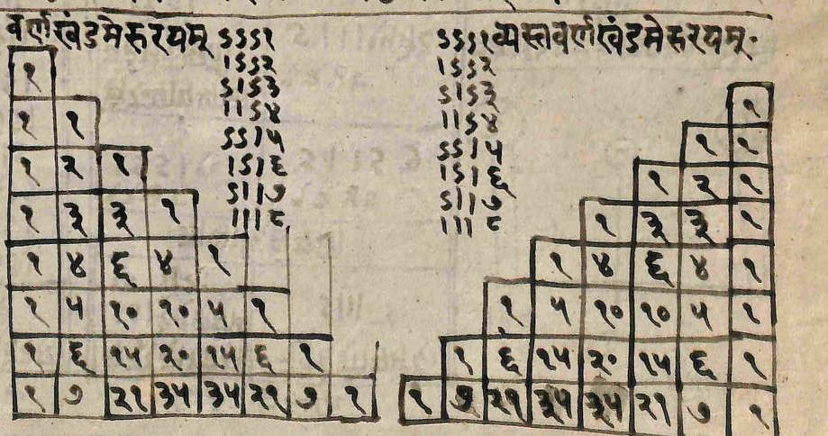

Meru Prastara of Pingala (from Shree Raghunath Sanskrit Research Institute Library, Jammu).
Resources and Reading Materials:
- P. P. Divakaran. The Mathematics of India: Concepts, Methods, Connections. 2018.
- Kim Plofker. Mathematics in India. 2008.
Further Reading:
- C. S. Seshadri. Culture and History of Mathematics in India. 2010.
- Studies in Indian Mathematics and Astronomy: Selected Articles of Kripa Shankar Shukla. 2019.
- Ganitananda: Selected Works of Radha Charan Gupta on History of Mathematics. 2019.
- T.S. Bhanu Murthy. A Modern Introduction to Ancient Indian Mathematics. 1992.